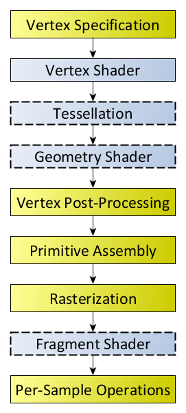

OpenGL学习笔记
OpenGL（英语：Open Graphics Library，译名：开放图形库或者“开放式图形库”）是用于渲染2D、3D矢量图形的跨语言、跨平台的应用程序编程接口（API）。这个接口由近350个不同的函数调用组成，用来从简单的图形比特绘制复杂的三维景象。而另一种程序接口系统是仅用于Microsoft Windows上的Direct3D。OpenGL常用于CAD、虚拟现实、科学可视化程序和电子游戏开发。
核心模式与立即渲染模式
早期的OpenGL使用立即渲染模式（Immediate mode，也就是固定渲染管线），这个模式下绘制图形很方便。OpenGL的大多数功能都被库隐藏起来，开发者很少有控制OpenGL如何进行计算的自由。而开发者迫切希望能有更多的灵活性。随着时间推移，规范越来越灵活，开发者对绘图细节有了更多的掌控。立即渲染模式确实容易使用和理解，但是效率太低。因此从OpenGL3.2开始，规范文档开始废弃立即渲染模式，并鼓励开发者在OpenGL的核心模式(Core-profile)下进行开发，这个分支的规范完全移除了旧的特性。
当使用OpenGL的核心模式时，OpenGL迫使我们使用现代的函数。当我们试图使用一个已废弃的函数时，OpenGL会抛出一个错误并终止绘图。现代函数的优势是更高的灵活性和效率，然而也更难于学习。立即渲染模式从OpenGL实际运作中抽象掉了很多细节，因此它在易于学习的同时，也很难让人去把握OpenGL具体是如何运作的。现代函数要求使用者真正理解OpenGL和图形编程，它有一些难度，然而提供了更多的灵活性，更高的效率，更重要的是可以更深入的理解图形编程。
着色器
着色器(Shader)是运行在GPU上的小程序。这些小程序为图形渲染管线的某个特定部分而运行。从基本意义上来说，着色器只是一种把输入转化为输出的程序。着色器也是一种非常独立的程序，因为它们之间不能相互通信；它们之间唯一的沟通只有通过输入和输出。

着色器分类
每个着色器使用这两个关键字设定输入和输出，只要一个输出变量与下一个着色器阶段的输入匹配，它就会传递下去。但在顶点和片段着色器中会有点不同。
顶点着色器
用来描述顶点属性（如位置、颜色等）的程序。顶点是二维或者三维空间中的一个点，比如二维或者三维图形的端点或交点。
1 | //顶点着色器程序 |
细分着色器
曲面细分着色器包含细分控制着色器 (Tessellation Control Shader / Hull Shader) 和细分计算着色器 (Tessellation Evaluation Shader / Domain Shader) 。在这个阶段可以操作三角形 (tri patch) 、四边形 (quad patch) 或者线段 (isoline) 等 patch 。
低精度网格、置换贴图和法线贴图等，在曲面细分着色器 (Tessellation Shader) 中，使用合适的细分算法，可以生成高精度网格，从而提高游戏画面的细节。
几何着色器
几何着色器(Geometry Shader)是由第四代显卡着色器架构 Shader Model 4 正式引入的第三个着色器，属于渲染管线的一个可选阶段，位于曲面细分(Tessellation)和光栅化(Rasterization)之间。顶点着色器以顶点数据作为输入数据，而几何着色器则以完整的图元(Primitive)作为输入数据。例如，以三角形的三个顶点作为输入，然后输出对应的图元。与顶点着色器不能销毁或创建顶点不同，几何着色器的主要亮点就是可以创建或销毁几何图元，此功能让GPU可以实现一些有趣的效果。例如，根据输入图元类型扩展为一个或更多其他类型的图元，或者不输出任何图元。需要注意的是，几何着色器的输出图元不一定和输入图元相同。几何着色器的一个拿手好戏就是将一个点扩展为一个四边形(即两个三角形)。
1 | #version 330 core |
片元着色器
进行逐片元处理过程如光照的程序。片元可理解为像素。
1 | //片元着色器程序 |
变量
attribute变量
attribute变量是只能在vertex shader中使用的变量。（它不能在fragment shader中声明attribute变量，也不能被fragment shader中使用）
一般用attribute变量来表示一些顶点的数据，如：顶点坐标，法线，纹理坐标，顶点颜色等。
uniform变量
Uniform变量简单理解就是一个GLSL shader中的全局常量，可以随意在任意shader(vertex shader, geometry shader, or fragment shader)访问，不同的shader中uniform是一起链接的，初始化之后，不能修改其值，否则会引起编译错误。
varying变量
varying变量是vertex和fragment shader之间做数据传递用的。一般vertex shader修改varying变量的值，然后fragment shader使用该varying变量的值。因此varying变量在vertex和fragment shader二者之间的声明必须是一致的。application不能使用此变量。
坐标系
OSG中采用的X轴正方向向右，Y轴正方向朝里，Z轴正方向向上。
OpenGL中采用的X轴正方向向右，Y轴正方向朝上，Z轴正方向朝外。

参考链接
- OpenGL,by wikipedia.
- LearnOpenGL,by Joey de Vries.
- 着色器,by wikipedia.
- 几何着色器,by 学无止境.
- 曲面细分着色器 1 简介,by MultivacX.
- Rendering Pipeline Overview,by opengl homepage.
- OpenGL 4.0的Tessellation Shader（细分曲面着色器）,by zenny_chen.
- OpenGL基础 - 统一变量Uniform,by 靖空间.
- 点到平面的距离公式,by 翰墨小生.
- OSG 碰撞检测之多面体求交器代码解读(PloytopeIntersector),by 风一样消逝的青春.
- OpenGL（八） 显示列表,by -牧野-.
- OSG三维渲染引擎–OSG渲染引擎中坐标系,by 苏黎.
- OpenGL学习笔记(12)基本光照,by Clingingboy.
- GLSL 三种变量类型（uniform，attribute和varying）理解,by wo不懂.
- OpenGL之glPolygonMode函数的用法,by 草上爬_.